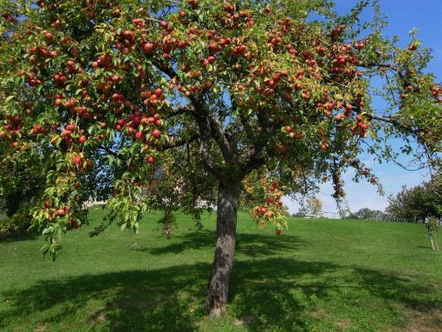
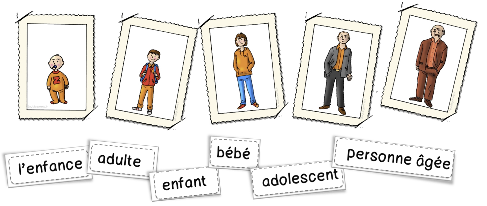

6e seq4
Séance 2 : La croissance des êtres vivants.¶
Comment expliquer la croissance des êtres vivants¶
Les êtres vivants grandissent tous, pour cela ils doivent se nourrir.
¶
La croissance des êtres vivants¶
Consigne 1 : Construire un graphique de l’évolution de la masse d’un phasme en fonction du temps. (En utilisant l’échelle 1 cm = 1 jour et 1 cm=1 g).
Consigne 2 : À l’aide des documents 1 et 2, montrer que les êtres vivants ont une croissance.
Consigne 3 : À partir des différents documents 3 et 4, montrer que la croissance d’un être vivant s’explique par la production de matière.
Consigne 4 à faire à la maison : Construire un graphique de l’évolution de la taille d’un phasme en fonction du temps. (En utilisant l’échelle 1 cm = 1 jour et 1 cm=1 mm). Décrire ensuite le graphique.
Compétence travaillée : Construire un Graphique et Décrire un graphique
Document 1 : Tableau de mesures effectuées par des élèves lors d’un élevage de phasmes.
Pour vivre, le phasme a besoin d’eau et de matière organique végétal (du lierre)
| Âge (en jours) | 1 | 3 | 5 | 7 | 9 |
| Masse (en g) | 1,7 | 2,9 | 3,6 | 5,0 | 8,2 |
| Longueur du phasme (en mm) | 2,0 | 3,5 | 5,5 | 7,0 | 8,5 |
Document 2 : Graphique de l’évolution de la masse d’un plant de blé en fonction du temps
Durant l’hiver, elle s’endort dans un terrier et ne consomme aucun aliment : c’est l’hibernation. Au retour du printemps, elle sort de son abri, elle pèse alors 2,5 kg. À la fin de l’été, elle mange 400 grammes de nourriture par jour (de l’herbe, des écorces et des baies). Elle fabrique ainsi d’importantes réserves de graisse (une matière
organique), elle pèse 4 kg avant l’hibernation, qui permettent le
fonctionnement de son organisme durant l’hibernation
suivante.
Le bois est essentiellement composé de cellulose, une matière organique. Chaque année, un cerne se forme. Il se compose d’une partie claire, le bois de printemps, et d’une partie plus foncée appelée bois d’été.
Bilan :
Tous les êtres vivants (animal, plante...) sont composés de matière organique.
Lorsqu’un être vivant grandit ou grossit, il fabrique de la matière organique.
Les êtres vivants sont donc des producteurs de matière.
Pour grandir, les êtres vivants prélèvent de la matière dans leur milieu de vie. Il y a donc des échanges de matière entre un être vivant et son milieu de vie.
Définition matière organique : matière fabriquée par les êtres vivants
Comment se développe une plante¶
Le développement des végétaux¶
Consigne : À partir des documents, construire le cycle de vie du pommier et explique comment une graine peut permettre la formation d’une nouvelle plante.
Document 1 : Définition cycle de vie.
Le cycle de vie est la suite des différentes étapes dans la vie d’un organisme vivant. Ce cycle est généralement construit avec des flèches qui relient les différentes étapes. Chaque étape est représentée par un dessin ou un texte.
Document 2 : Le pommier
Le pommier est un être vivant, comme tous les êtres vivants il va grandir et se reproduire. Pendant quelques années (4 ou 5 ans), le pommier va grandir, c’est la période de croissance. Après, le pommier va fleurir pour la première fois, il fleurira ensuite tous les ans, c’est la floraison.
Document 3 : La fleur de pommier.
Certaines de ses fleurs vont se transformer en fruits contenant des graines, les pommes. Ce phénomène permet la reproduction des pommiers
Document 4 : La pomme.

La pomme est un fruit qui contient plusieurs pépins, ce sont des graines de pommiers. Cette graine contient l’embryon qui est un nouvel individu issu d’une reproduction.

Document 5 : La graine de pommier.
Dans certaines conditions, la graine va donner une nouvelle plante, c’est la germination. Ce petit pommier se développe : de nouvelles racines et de nouvelles tiges se forment et grandissent.

{kind=link}
{kind=link}
{kind=link}
{kind=link}
{kind=link}
{kind=link}
{kind=link}
Bilan :
La graine contient une petite plante. Lorsque la graine va germer, la petite plante va commencer à grandir.
Cette plante va continuer de grandir et subir des transformations, des fleurs vont apparaître.
Les fleurs de la plante vont se transformer en fruits contenant de nouvelles graines. Ce sont les fleurs qui permettent aux plantes de se reproduire.
Ces étapes constituent le cycle de vie du végétal.
{kind=link}
Séance 3 : le rôle des deux sexes dans la reproduction¶
-
Comment les animaux se développent-ils ?¶
<!-- -->
Consigne 1 : Construire un tableau comparant la reproduction de la souris et de la libellule, le nombre d’individus nécessaires pour avoir un nouvel individu, où se forme le nouvel individu, est-ce que le nouvel individu ressemble à ses parents, les cellules nécessaires pour produire un nouvel individu, les étapes nécessaires au passage à l’âge adulte.
Consigne 2 : Dessine un schéma représentant le cycle de vie de chaque animal
Compétences travaillées : Construire un tableau et Construire un schéma
Document 1 : La vie des libellules
 De mai à octobre, il est fréquent
d’admirer près d’étangs et des ruisseaux des libellules aux grandes
ailes brillantes.
De mai à octobre, il est fréquent
d’admirer près d’étangs et des ruisseaux des libellules aux grandes
ailes brillantes.
On peut observer des mâles et des femelles accouplés en vol ou posés sur les tiges des plantes aquatiques. Lors de l’accouplement, une cellule reproductrice mâle (spermatozoïde) rencontre une cellule reproductrice femelle (ovule), ce qui permet de former un œuf.
Ensuite, les femelles vont pondre ces œufs. Quelques jours après la ponte, les œufs éclosent et libèrent dans l’eau des larves. Les adultes mourront tous à l’arrivée de l’hiver.
Ces larves chassent les petits animaux de la mare : elles approchent lentement de leur proie en marchant grâce à leurs trois paires de pattes.
La vie larvaire peut durer deux ou trois ans, durant lesquels les larves vont grandir.
Après deux ou trois ans, au printemps, la larve va sortir de l’eau sur une tige et devenir immobile. Ce stade d’immobilité est appelé nymphe. Son corps va subir des transformations que l’on appelle métamorphose.
À la fin de la métamorphose, une jeune libellule adulte est libérée. Elle ne grandira plus.
Document 2 : La vie des souris
 Les souris sont de petits
mammifères pouvant vivre de deux à trois ans.
Les souris sont de petits
mammifères pouvant vivre de deux à trois ans.
Les souris adultes peuvent se reproduire toute l’année. Lors de l’accouplement, une cellule reproductrice mâle (spermatozoïde) rencontre une cellule reproductrice femelle (ovule), ce qui permet de former un fœtus. Le fœtus va se développer dans le corps de la femelle pendant une vingtaine de jours.
Après ce petit temps, la femelle va accoucher d’une jeune souris. La jeune souris va grandir et deviendra un adulte après trois mois. Elle ne grandira plus.
| Êtres vivants | Souris | Libellules |
| Nombre d’individus nécessaires pour avoir un nouvel individu | ||
| Où se forme le nouvel individu | ||
| Une fois naît le nouvel individu ressemble à ses parents | ||
| Cellules nécessaires pour produire un nouvel individu | ||
| Étapes nécessaires au passage à l’âge adulte |


{kind=link}


Définitions :
Larve : Stade de développement de certains êtres vivants à la sortie de l’œuf. La forme et le mode de vie de la larve sont différents de ceux de l’adulte.
Cycle de vie : Série d’étapes qui composent la vie d’un être vivant.
Métamorphose : Transformation qui permet le passage de la larve à l’adulte.
Adulte : Individu capable de se reproduire.
Bilan :
Pour se reproduire, la majorité des animaux ont besoin de deux individus. Une cellule reproductrice mâle et une cellule reproductrice femelle s’unissent pour former le nouvel individu.
Ce nouvel individu peut soit se former dans un œuf soit dans la femelle.
Chez les insectes, le jeune est différent de l’adulte, on l’appelle larve. La larve va grandir puis subir une métamorphose où elle va se transformer en adulte qui est capable de se reproduire.
Chez les mammifères, le jeune ressemble à l’adulte. Le jeune va grandir puis il deviendra un adulte capable de se reproduire.
Ces étapes constituent le cycle de vie de l’animal.
-
Le point commun entre tous les jeunes animaux est :
- qu’ils sont identiques aux adultes.
- Qu’ils sont différents des adultes.
- Qu’ils grandissent.
- Qu’ils reproduisent.
-
La libellule va acquérir la possibilité de se reproduire :
- en sortant de l’œuf
- en étant une larve.
- Après la métamorphose.
-
Pour former un nouvel individu, il faut :
- deux cellules, un spermatozoïde et un ovule.
- Une cellule, un spermatozoïde.
- Une cellule, un ovule.
- Un œuf.
-
Le fœtus de souris se développe dans
- un œuf :
- le corps de la femelle.
- Le corps du mâle.
- Dans l’eau.
-
La jeune libellule est appelée larve, donc :
- elle sort d’un œuf.
- C’est un insecte.
- Elle est différente de l’adulte.
-
La métamorphose est :
- la transformation de l’adulte en œuf.
- La transformation de l’œuf en larve.
- La transformation de la larve en adulte.
- La reproduction.
-
Comment se développent les êtres humains ?¶
<!-- -->
<!-- -->
Consigne 1 : Représenter le cycle de vie d’un être humain.
Consigne 2 : Compléter le bilan.
Document 1 : La reproduction**
Chacun d’entre nous est issu d’une reproduction sexuée, impliquant un homme et une femme.
{kind=link}
A la suite d’un rapport sexuel (accouplement), il peut y avoir une fécondation : c’est la rencontre d’un spermatozoïde produit par l’homme et d’un ovule produit par la femme. Il se forme alors une cellule-œuf.
Le développement d’un nouvel individu commence aussitôt : en une semaine, cette cellule-œuf devient un embryon qui se fixe dans l’utérus maternel.
Vers la 8e semaine, les organes sont identifiables : on appelle désormais le futur bébé un fœtus.
Document 2 : Du fœtus au bébé prêt à naître.
L e futur bébé se développe en puisant ce dont il a besoin dans le sang de sa mère par l’intermédiaire du placenta et du cordon ombilical.
A partir du 4e mois, la mère peut sentir son bébé bouger. L’accouchement a lieu au bout de 9 mois environ .
Entre le 3e et le 4e mois, le sexe du fœtus est reconnaissable par échographie. En effet, déjà avant la naissance, un garçon et une fille se distinguent par leur organes génitaux. Ces différences portant sur les organes reproducteurs sont appelés caractères sexuels primaires.
Document 3 : les étapes de la vie
 Un bébé va grandir et devenir un enfant. La croissance va continuer pendant environ 16 à 18 ans. Lors de l’adolescence, la puberté va avoir lieu et les individus deviennent capable de se reproduire. A la fin de l’adolescence, l’adolescent deviendra un adulte.
{kind=link}
Bilan :
La ___________________ se forme lors de la fécondation qui est la rencontre d’un ___________________ (cellule reproductrice de l’homme) et d’un _____________ (cellule reproductrice de la femme).
La cellule-œuf va se développer et former un ____________ dans l’appareil reproducteur de ____________.
La grossesse dure pendant __________. À partir de la 8e semaine, tous les organes de l’embryon sont formés, on l’appelle alors __________.
À partir de la naissance, le bébé continue de _________, il va devenir un __________ puis un ____________.
À l’adolescence, l’individu devient capable de se __________, il va devenir un ___________. L’ensemble de ces transformations est la __________.
Après l’adolescence, l’individu ne grandit plus, mais d’autres transformations vont apparaître jusqu’à sa mort.
Bilan :
La ___________________ se forme lors de la fécondation qui est la rencontre d’un ___________________ (cellule reproductrice de l’homme) et d’un _____________ (cellule reproductrice de la femme).
La cellule-œuf va se développer et former un ____________ dans l’appareil reproducteur de ____________.
La grossesse dure pendant __________. À partir de la 8e semaine, tous les organes de l’embryon sont formés, on l’appelle alors __________.
À partir de la naissance, le bébé continue de _________, il va devenir un __________ puis un ____________.
À l’adolescence, l’individu devient capable de se __________, il va devenir un ___________. L’ensemble de ces transformations est la __________.
Après l’adolescence, l’individu ne grandit plus, mais d’autres transformations vont apparaître jusqu’à sa mort.
Correction :
La cellule-oeuf se forme lors de la fécondation qui est la rencontre d’un spermatozoïde (cellule reproductrice de l’homme) et d’un ovule (cellule reproductrice de la femme).
La cellule-œuf va se développer et former un embryon dans l’appareil reproducteur de la femme.
La grossesse dure pendant 9 mois. À partir de la 8e semaine, tous les organes de l’embryon sont formés, on l’appelle alors fœtus.
À partir de la naissance, le bébé continue de grandir et grossir, il va devenir un enfant puis un adolescent.
À l’adolescence, l’individu devient capable de se reproduire, il va devenir un adulte. L’ensemble de ces transformations est la puberté.
Après l’adolescence, l’individu ne grandit plus, mais d’autres transformations vont apparaître jusqu’à sa mort.
-
Comment se manifeste la puberté ?¶
¶
{kind=link}
-
La puberté¶
Consigne 1 : **À partir des documents, construire un tableau comparant les changements liés à la puberté chez les filles et les garçons, vous indiquerez dans ce tableau : – l’âge moyen de la puberté, les changements au niveau des organes sexuels, les changements de pilosité, les changements de comportement et les changements de morphologie (=forme du corps) **
Consigne 2 : Expliquer en quoi la puberté permet aux humains d’être capables de se reproduire
Compétence travaillée : construire un tableau
Document 1 : Des changement du corps d’un garçon et d’une fille.
 Document 2 : Des transformations
liées à la puberté
Document 2 : Des transformations
liées à la puberté
On observe des modifications comportementales : envie de plaire, sautes d’humeur, émotivité, oppositions aux adultes, envie d’indépendance… cette période que l’on nomme parfois de façon péjorative « crise d’adolescence » ou « âge bête » est une étape importante du développement.
L’adolescent-e subit également des transformations physiques (voir le document 1).
Chez les filles, les règles surviennent. Les ovaires des filles produisent un ovule par mois et chaque mois, l’utérus se prépare en cas de fécondation en fabriquant des vaisseaux sanguins. S’il n’y a pas de fécondation, ces vaisseaux sont détruits et du sang s’écoule du vagin : ce sont les règles.
Chez les garçons, les éjaculations apparaissent, il s’agit d’émission de sperme qui est un mélange de spermatozoïdes et de liquide nutritif pour ces cellules.
Les règles et les éjaculations sont les signes visibles du fonctionnement des appareils reproducteurs.
Correction :
| Période de la puberté | Organes sexuels | Pilosité | Comportement | Morphologie (=forme du corps) | |
| Filles | |||||
| Garçons |
Bilan :
Un être humain devient capable de se reproduire à partir de la puberté, car les organes reproducteurs deviennent fonctionnels.
Lors de la puberté, le corps subit des transformations.
Lors de la puberté, il y a aussi des changements de comportement.
L’âge de la puberté n’est pas le même pour tout le monde.
-
Comment se forment un fruit et des graines ?¶

Transformation de la fleur de prunier en prune

-
La fleur¶
Consigne 1 :A partir des informations du document 1, complète le document 2.
Consigne 2 : Réaliser la dissection de la fleur de forsythia et faire le dessin de cette dissection. Voir document 3
Document 1 : Les différents composants d’une fleur :
Les fleurs sont des organes composés de différents éléments :
- Les sépales sont les éléments les plus externes de la fleur, ils sont généralement verts, mais peuvent être de la couleur des pétales ; ils forment également une couronne et peuvent eux aussi être soudés ;
- Les pétales sont les éléments les plus colorés de la fleur, ils sont disposés en cercle et forment une couronne, ils sont parfois soudés les uns aux autres ;
- Les étamines sont à l’intérieur de la couronne de pétales, elles sont aussi disposées en cercle. Une étamine est composée d’une sorte de tige qui porte à son extrémité deux petits sacs jaunes pleins de pollen. Les étamines sont les organes reproducteurs mâles ;
- Le pistil est l’élément central de la fleur, c’est l’organe reproducteur femelle. Il est constitué d’une zone renflée tout en bas de la fleur collée au pédoncule floral, qui se prolonge par une espèce de tube dont l’extrémité a souvent une forme d’étoile. À l’intérieur se trouve l’ovule.
- Le pédoncule floral relie la fleur à une tige.
Document 2 : Schéma d’une fleur type.
Document 3 : Dissection florale.
Matériel :
• Une paire de ciseaux fins,
• Un scalpel
• Une paire de pinces fines,
• Une loupe binoculaire avec une lumière
Réalisation de la dissection florale
Vous placerez l’ensemble des éléments sur le document 4 en respectant l’emplacement dans la fleur.
- Enlever les sépales et les pétales
A l’aide de ciseaux et de pinces, ôter les sépales.
Puis de la même manière, ôter les pétales.
- Enlever les organes reproducteurs
Prélever à l’aide des pinces les étamines.
Tenir le pistil à l’aide des pinces, puis couper délicatement l’ovaire situé à sa base (pédoncule floral).
- Observer les organes reproducteurs
Observer le pollen des étamines à la loupe binoculaire.
Ouvrir l’ovaire à l’aide du scalpel et observer les ovules contenus dans les ovaires à la loupe.
- Réaliser un compte-rendu
Faire un dessin des différentes pièces florales sur le document 4 en respectant l’emplacement et le nombre d’éléments.
Légender les pièces florales.
Document 4 :
{kind=link}
Bilan :
Une fleur est l’organe de la plante qui permet la formation des fruits et des graines. Elle est composée de l’extérieur vers l’intérieur, de sépales, de pétales, d’étamines et d’un pistil.
Les étamines portent les sacs polliniques contenant le pollen.
Le pistil contient des ovules.
 ¶
¶
-
La formation du fruit et des graines¶
Consigne 1 : À l’aide du site : xpfleur.svtdebrock.com, faire les différentes expériences du document 1 et noter les résultats observés. (2 points)
Consigne 2 : expliquer dans quelles conditions la fleur se transforme-t-elle en un fruit contenant des graines, en justifiant vos réponses à l’aide des expériences que vous aurez effectuées. (1,5 points)
Consigne 3 : Indiquer ce que devient chacun des éléments de la fleur. (0.5 point)
Consigne 4 : Compléter les schémas du document 2. (1 point)
Document 1 : Expériences sur la transformation des en fruits
| Expériences | Conditions expérimentales | Résultats : transformation en fruit ou pas. |
| 1 | Fleur intacte | |
| 2 | Fleur dont le pistil est isolé de tout contact avec des insectes pollinisateurs et du pollen extérieur. | |
| 3 | Fleur dont on a supprimé certaines parties : | |
• Sépales |
||
• Pétales |
||
• Étamines |
||
• Pistil |
||
| 4 | Fleur dont on a supprimé les étamines et qui a reçu du pollen de la même espèce sur son pistil |
|
| 5 | Fleur dont on a supprimé les étamines et qui a reçu du pollen d’une autre espèce sur son pistil. |
Document 2 : de la fleur au fruit


Aides :
| Expériences | Conditions expérimentales | Résultats : transformation en fruit ou pas. |
Conclusions : Pour qu’une fleur se transforme en fruit, il faut.. |
| 1 | Fleur intacte | ||
| 2 | Fleur dont le pistil isolée de tout contact avec des insectes pollinisateurs et du pollen extérieur. | ||
| 3 | Fleur dont on a supprimé certaines
parties : • Sépales • Pétales • Étamines • Pistil |
||
| 4 | Fleur dont on a supprimé les étamines et qui a reçu du pollen de la même espèce sur son pistil. |
||
| 5 | Fleur dont on a supprimé les étamines et qui a reçu du pollen d’une autre espèce sur son pistil. |
Définition reproduction sexuée : formation d’un nouvel individu issu d’un mélange entre des organes mâles et femelles.
Définition pollinisation : Transport du pollen, des étamines jusqu’au pistil.
Bilan :
Les fleurs sont les organes reproducteurs des plantes.
Les étamines produisent du pollen qui contient les cellules reproductrices mâles et le pistil contient des ovules qui contiennent les cellules reproductrices femelles.
Dans une fleur, le pollen qui est libéré par les étamines va être transporté par le vent ou les insectes.
Si le pollen se dépose sur le pistil d’une fleur de la même espèce, c’est la pollinisation, les cellules mâles et femelles vont se rencontrer et permettre la fécondation.
La fleur va se transformer. Le pistil va former un fruit et les ovules qui sont à l’intérieur du pistil vont donner des graines. Les autres éléments meurent.
-
Comment conserver les aliments ?¶
¶
-
La conservation des aliments¶
Clélia a lu un article qui l’a intriguée : « Une famille a attrapé la salmonellose. La famille entière a été malade après avoir consommé des hamburgers. » Elle se demande comment cela est possible et comment l’éviter.
Consigne 1 : D’après les informations des documents, expliquer à Clélia comment la famille a pu tomber malade.
Consigne 2 : D’après les informations des documents, citer quelles sont habitudes que nous pouvons avoir pour éviter ce problème en expliquant leur intérêt.
Compétence travaillée : extraire et mettre en relations des informations
Document 1 : La salmonellose
La salmonellose est une maladie provoquée par des bactéries nommées salmonelles, ce sont des bactéries pathogènes. Ces bactéries se développent dans les aliments crus comme les œufs, le lait et la viande, et dans les aliments peu cuits. Cette maladie provoque des diarrhées, des vomissements et de la fièvre.
La meilleure protection contre le risque de salmonellose est une bonne cuisson des aliments.
Document 2 : Les conditions de développement des bactéries
{kind=link}
Document 3 : L’hygiène en cuisine.
Les bactéries sont présentes partout. Si l’on désire conserver des aliments ou des plats cuisinés, une solution est d’éviter que les micro-organismes néfastes ne contaminent les aliments.
Des règles simples permettent d’empêcher leur présence sur les surfaces de travail et les aliments :
- Nettoyer le plan de travail
- Laver les légumes
- Nettoyer les instruments de cuisine
- Se laver les mains
- Porter des vêtements adaptés
Définitions :
Micro-organismes : êtres vivants très petits observables uniquement au microscope.
Pathogène : se dit d’un élément qui provoque des maladies chez l’être humain
Bilan :
Des micro-organismes peuvent se développer sur les aliments. Certains de ces micro-organismes sont pathogènes. On prend donc des mesures d’hygiène pour éviter la contamination des aliments.
Pour conserver les aliments on peut les stériliser (ce qui tue les micro-organismes) ou les conserver au froid (ce qui évite le développement de micro-organismes).

{kind=link}
Consigne 1 : Compléter le tableau du document 3 pour comparer l’agriculture conventionnelle et l’agriculture biologique.
Consigne 2 : Construire un tableau à double entrée, pour comparer l’élevage en poulailler et l’élevage « Label Rouge », en indiquant les avantages et les inconvénients de chacun.
Consigne 3 : Construire un schéma montrant l’ensemble des étapes de la fabrication du pain.
Document 1 : Calendrier de culture des pommes de terre.
En agriculture conventionnelle, on pulvérise des produits chimiques (pesticides) sur les feuilles pour protéger les plants contre le mildiou et certains insectes comme le doryphore. On utilise aussi des engrais chimiques pour augmenter la croissance des plantes.
{kind=link}
Document 2 : Protéger les plantes sans certains produits issus de l’industrie chimique.
En agriculture dite biologique, on ne peut pas utiliser de produits de l’industrie chimique. Le but est d’éviter d’exposer le cultivateur et le consommateur à des substances mauvaises pour la santé. Il est aussi de préserver des insectes qui, eux, ne sont pas nuisibles.
Pour protéger les cultures, il faut donc trouver d’autres solutions. Elles sont souvent plus complexes. Par exemple, les champs accueillent chaque année une culture différente : les ennemis de la culture précédente ne trouent ainsi plus à se nourrir et disparaissent. On peut aussi choisir des variétés plus résistantes ou enlever les insectes à la main. Certains produits à base de cuivre ou de bactéries sont aussi parfois utilisés.
Document 3 : Comparaison de l’agriculture conventionnelle et biologique.
| Agriculture biologique | Agriculture conventionnelle | |
| Avantage | ||
| inconvénients |
Document 4 : Élevage en poulailler.
 title="ventilation-dans-un-poulailler-industriel"
Ce type d’élevage contient
environ 23 poulets par m². Ce sont des poulets de souches à croissance
rapide. Les poulets grandissent donc très vite, en 40 jours, le poulet
peut être tué pour donner de la viande. Mais leur viande a peu de goût.
title="ventilation-dans-un-poulailler-industriel"
Ce type d’élevage contient
environ 23 poulets par m². Ce sont des poulets de souches à croissance
rapide. Les poulets grandissent donc très vite, en 40 jours, le poulet
peut être tué pour donner de la viande. Mais leur viande a peu de goût.
L’absence de déplacement est responsable de nombreuses maladie du squelette et des articulations les faisant souffrir.
Ce type d’élevage permet la production de viande dont le coût est plus faible.
Document 5 : Élevage « Label Rouge »
 title="poulet-volaille-label-rouge-pascale-magdelaine-itavi"
Dans ce type d’élevage, des
poulets a croissance lente sont utilisés, ils grandissent lentement, il
faut attendre environ 120 jours pour que le poulet puisse être tué pour
sa viande. Mais la viande a plus de goût. Un éleveur peut avoir jusqu’à
11 poulets par m². Les poulets de ce type d’élevage doivent pouvoir
aller en plein air.
title="poulet-volaille-label-rouge-pascale-magdelaine-itavi"
Dans ce type d’élevage, des
poulets a croissance lente sont utilisés, ils grandissent lentement, il
faut attendre environ 120 jours pour que le poulet puisse être tué pour
sa viande. Mais la viande a plus de goût. Un éleveur peut avoir jusqu’à
11 poulets par m². Les poulets de ce type d’élevage doivent pouvoir
aller en plein air.
Ce type d’élevage produit une viande dont le coût est plus élevé.
Document 6 : Du blé au pain.
Le blé est la céréale la plus cultivée en France (37 millions de tonnes en 2018). La majorité du blé va servir à la production de farine, le reste va servir principalement comme nourriture pour les animaux.
Pour fabriquer la farine, les grains blé vont être broyés par des meules pour obtenir jusqu’à obtenir une poudre fine.
La farine va ensuite être mélangée à de l’eau, de la levure et du sel, pour former une pâte qui va ensuite être laissée au repos. La pâte est ensuite cuite.
Bilan
Les exploitations agricoles (culture ou élevage) produisent les matières premières d’origine animale (viandes, poissons) ou végétale (légumes, fruits). Ces produits sont à la base de notre alimentation.
Beaucoup de nos aliments proviennent de la transformation des matières premières agricoles, par exemple le pain ou le yaourt.